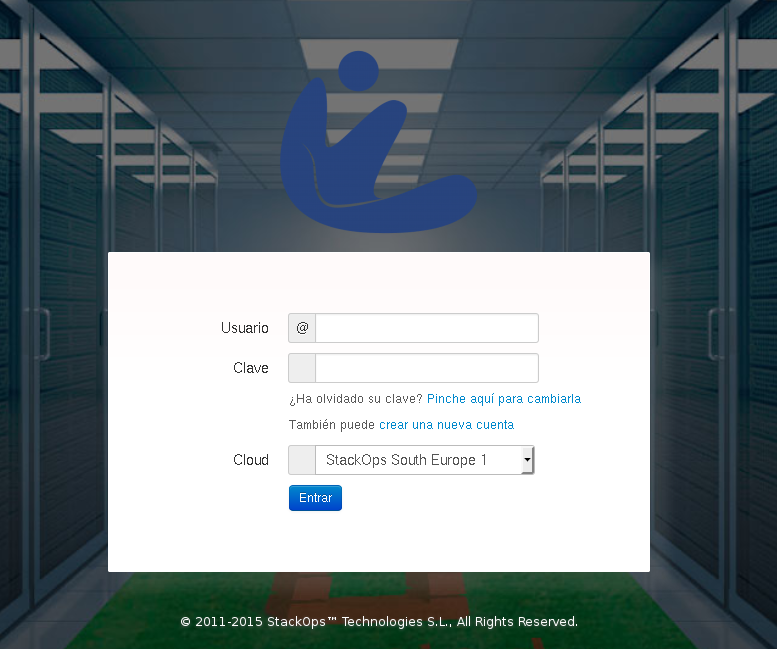
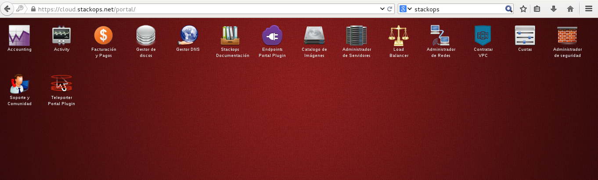

Servicios que ofrece StackOps cirrusflex
- Virtual Datacenter: Nos ofrece una nube de instraestructura (IaaS) pública. La plataforma se encuentra alojada en Madrid.
- Virtual Private Cloud: Nos ofrece la posibilidad de alquilar nuestra propia nube privada con OpenStack, para gestionar nuestros recursos.
Introducción a StackOps Cirrusflex (VDC)
- La empresa StackOps nos ofrece un cloud público: Cirrusflex VDC
- Implementa las funcionalidades básicas de los componentes principales
de OpenStack: Nova, Glance, Neutron, Cinder, etc.
- StackOps ha optado por no utilizar OpenStack Horizon, el panel web de
administración de OpenStack. La herramienta de gestion de la plataforma se llama StackOps
Portal. Esta aplicación web se encuentra disponible en la
url http://cloud.openwebinars.cirrusflex.com/portal/
Acceso a StackOps Cirrusflex
- Acceso mediante usuario/contraseña
- Podemos acceder a dos zonas (Novedad!!!):
- SE1: South Europe: Funciona con icehouse.
- MMA1: MasMovil1: Funciona con Juno
- Lo normal es que un usuario gestiona sólo un proyecto o Virtual
Datacenter, aunque puede estar asignado a varios.
- Un usuario puede:
- Crear y gestionar instancias
- Asociar direcciones IP públicas a sus instancias
- Crear volúmenes
- Gestionar redes virtuales
- Crear y editar reglas de acceso a sus instancias mediante los Grupos
de Seguridad
- ...
Acceso a StackOps Cirrusflex

Acceso a StackOps Cirrusflex
